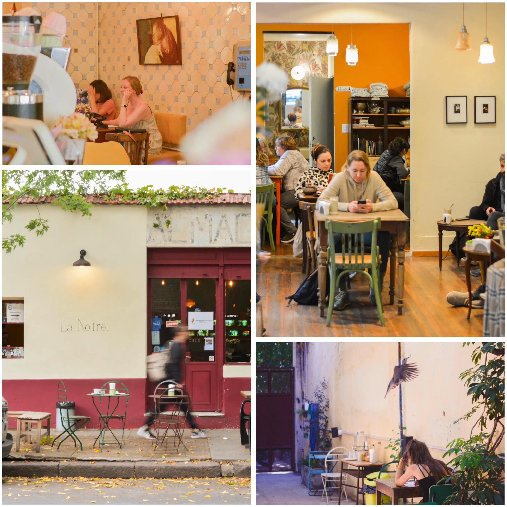

← Volver
La Noire Café

La Noire Café cuenta con dos sedes en los barrios de Colegiales y Chacarita.
Estaba buscando un lugar tranquilo para estudiar y lo encontré. Es un café con estética cuidada, luz suave, música instrumental de fondo, tranquilidad, un excelente café.
“De la moderna máquina cafetera, al ritmo del jazz que se oye de fondo, salen sin parar espressos, macchiatos, cappuccinos y flat White… Sobre el mostrador están exhibidos diferentes dulces y pastelería artesanal” – La Nación
Leer nota completa
Me gustó especialmente que las mesas están bien separadas entre sí, lo cual te permite trabajar en silencio sin sentirte observado. Tiene enchufes cerca y buen WiFi. Además, cuenta con un patio interno muy hermoso y tranquilo.
Volvería sin dudas. Recomendado para sesiones de estudio largas o lectura.